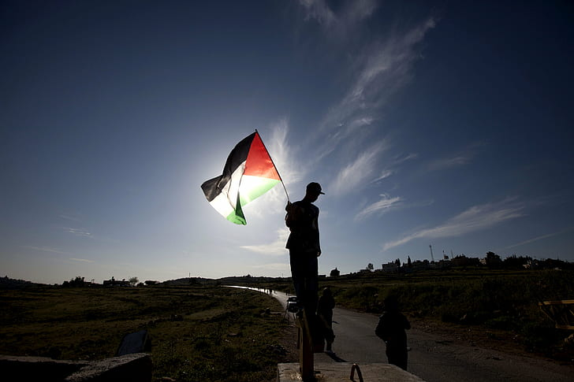
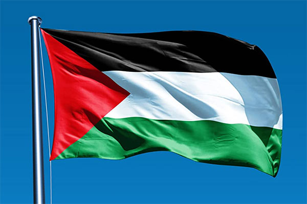
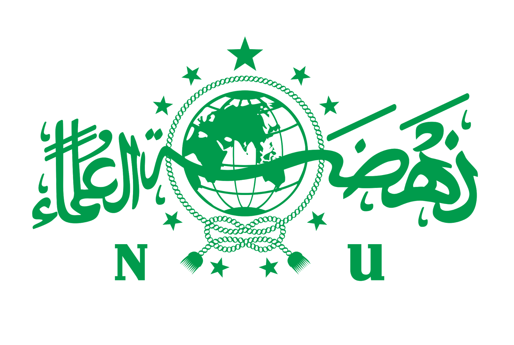

Yuk, Membatu saudara kita di palestine!

NU Care-LAZISNU #SAVEPALESTINE
Akun TerverifikasiRp 184.500
Terkumpul
Rp 50.000.000
Dana dibutuhkan
68
Hari lagi
Tentang Program
Program donasi Palestina adalah inisiatif kemanusiaan untuk membantu masyarakat Palestina yang terdampak konflik dan krisis kemanusiaan. Donasi dapat disalurkan melalui berbagai lembaga, seperti Rumah Amal USK, INH, BAZNAS, dan Sedekah Kreatif.
Lembaga yang menyalurkan donasi Palestina Rumah Amal USK Menggalang dana untuk bantuan darurat seperti makanan, air bersih, obat-obatan, dan perlengkapan medis. INH Memberikan bantuan dan memulihkan kehidupan warga Palestina yang terdampak konflik berkepanjangan. BAZNAS Menyalurkan bantuan kemanusiaan untuk masyarakat Palestina. Sedekah Kreatif Menyediakan kebutuhan pokok seperti makanan, air bersih, obat-obatan, perlengkapan musim dingin, dan tempat tinggal sementara untuk keluarga yang terdampak. Manfaat berdonasi untuk Palestina Selain meringankan beban saudara di Palestina, berdonasi untuk Palestina juga diyakini dapat memperoleh pahala yang sangat besar.